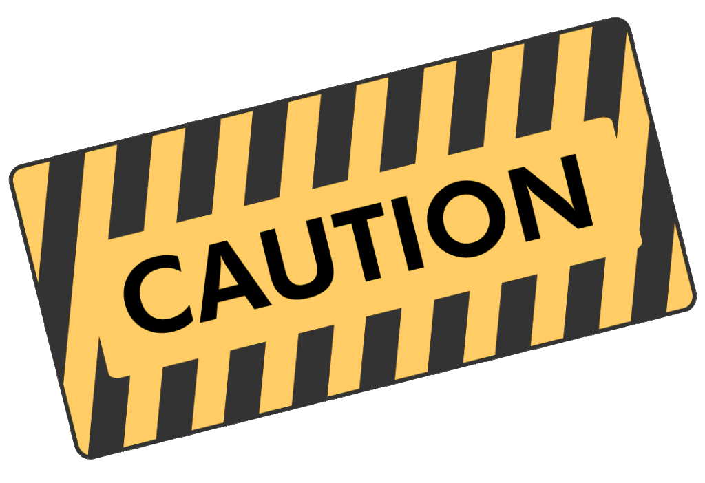

Are you paying cash for healthcare? What if you can’t afford health insurance and your income is over the threshold to get financial assistance or charity care? Perhaps you don’t qualify for government-sponsored health plans (like Medicaid) or ACA subsidies (Obamacare tax credits). Or maybe you are underinsured because you have a ridiculously high deductible. You could also be part of a cost-sharing plan or uninsured. If you are a cash-paying or self-pay patient what are your options?
Cash for healthcare means paying for healthcare without using insurance, in cash, debit card, or credit card. However, it is never advised to use a credit card to pay for medical care! People who obtain medical services without using insurance are called self-pay patients.
#1. It might be cheaper To Pay Cash for HealthCare and Not use Insurance:
Even with insurance, it is often cheaper to pay cash for healthcare. High deductibles and cost-sharing drive up out-of-pocket expenses, leaving many functionally uninsured until the deductible is met. In fact, those underinsured with high-deductible private plans fall just second behind uninsured persons for having the highest prevalence of medical debt.
The downside for the insured is that the cash amount cannot be applied to your deductible. However, Texas and Tennessee have recently passed state laws allowing some insured residents to get healthcare purchased without using insurance credited toward their deductibles.
For insured consumers in all states, if it’s later in the year and it’s clear that you will not reach your deductible, paying the cash price could save you money.
This can be especially true regarding prescription drugs. Your copay could be more than the actual cost of the drug. You can shop around for the best prescription drug prices with SingleCare. The free discount often beats your copay.
Whether it is for your prescription drugs, lab tests, hospital care, or medical devices, always ask for the cash price. It might be a better deal than running it through your insurance plan.
Check out our video, What Your Doctor Wants You to Know about Health Insurance. Oakbridge Insurance broker Matt Henderson reveals his hard-earned insider secrets that explain why medical bills are America’s #1 cause of debt and bankruptcy.
Price Transparency Makes it Easier to Control Out-of-Pocket Costs
Price transparency laws make it easier for consumers to know the cost of a covered item or service before receiving care, making it easier to shop around, compare prices, and estimate costs. Read about your rights under these laws in our upcoming article, How Price Transparency Helps Reduce Out-of-Pocket Costs.
#2. Direct Primary Care (DPC):
Direct Primary Care (DPC) is an alternative healthcare model that offers affordable primary care services. With a membership fee, DPC practices provide unlimited primary care visits, discounted lab tests, and sometimes even access to telemedicine services. With direct primary care, you know the costs of everything upfront so you can decide what to pay for directly at your doctor.
DPC does not replace health insurance. For those paying cash for healthcare, it can be a cost-effective option for routine care and preventive services. Use this map to locate your nearest Direct Primary Care facility.
#3. Community Health Centers and Local Resources:
Federally Qualified Health Centers (FQHCs) are commonly known as Community Health Centers (CHCs) and Rural Health Clinics (RHC’s). They provide primary healthcare services regardless of insurance status or ability to pay and are part of our nation’s safety net system. Find a Federally qualified health center (FQHC) near you.
Additionally, the area you live in may have local resources available, including charity care, sliding scale healthcare, or financial assistance. Contact 2-1-1 to find out what is available in your area.
Learn more about FQHCs, charity care, low-income, and government-sponsored healthcare programs in our article, What if I Can’t Afford Health Insurance?
#4. Retail Health Clinics:
Retail health clinics are walk-in clinics located inside pharmacies, grocery stores, or large retail stores. They offer preventive care and vaccinations and treat minor illnesses and injuries. They also typically cost less than the same services offered in physician offices, urgent care centers, and emergency rooms (ERs). Fixed, transparent pricing makes them especially attractive to those paying cash for healthcare.
#5. Urgent Care:
Urgent care centers are walk-in medical centers that treat non-life-threatening injuries like sprains, broken bones, or cuts, or illnesses like flu. They cost more than primary care but 5-10X less than a hospital ER visit. They also have short wait times and most offer cash discounts if you are uninsured. Like retail health clinics, many have posted pricing, usually on their website.
Note: The No Surprises Act, which sets up a process to help people avoid surprise medical billing, doesn’t pertain to urgent care. So, if you are using insurance, make sure the urgent care center that you visit is in your health insurance plan’s network.
Urgent care may be worth considering if you need medical care after hours. If you are paying out-of-pocket they can save you money. However, if you have a serious life-threatening emergency, go to the ER!
#6. Non-ACA Insurance Alternatives:
Explore insurance outside of the Health Insurance Marketplace in Health Insurance Alternatives to the Affordable Care Act (ACA) or Obamacare.

#7. Medical Tourism:
Medical tourism is international travel for the purpose of receiving medical care. It is a worldwide, multibillion-dollar market, especially attractive to those paying cash for healthcare. Americans are seeking treatment in Argentina, Brazil, Canada, Colombia, Costa Rica, Cuba, the Dominican Republic, Ecuador, Germany, India, Malaysia, Mexico, Nicaragua, Peru, Singapore, and Thailand. Average cost savings are in the range of 45% to 90%, according to CNBC International.
Some US health insurance companies and large employers have alliances with healthcare facilities outside the US. However, most medical tourists rely on private companies or medical concierge services to identify foreign healthcare facilities.
Reducing Medical Tourism Risks
Medical tourism is not without risks, including infections and complications. It is important to let your domestic healthcare providers know about any healthcare you plan to receive overseas. Follow-up care for complications might be expensive and prolonged. Surgeons usually will not treat complications or issues arising from a procedure performed by another surgeon unless you are in the ER with a life-and-death emergency. Additionally, treatment of health complications resulting from overseas care might not be covered by your health insurance.
To help reduce some of these risks, the CDC recommends that you consult with your domestic primary healthcare provider 4-6 weeks before you travel. In this pre-travel consultation:
- Discuss general information for healthy travel and learn about risks that are specific to your health status.
- Discuss the procedure or healthcare services you are planning overseas and their associated risks.
- Plan for follow-up care if serious complications arise.
- Discuss risks associated with travel, particularly flying, after the procedure.
- Find out what activities are not recommended around the time of the medical procedure, such as swimming or walking.
- Purchase international travel health insurance that covers medical evacuation back to the US.
The American Medical Association (AMA) recommends that you choose providers and facilities that are accredited. Look for accreditation by the Joint Commission International or the International Society for Quality in Health Care.
Additionally, the Centers for Disease Control (CDC) provides the CDC Yellow Book as a guide for patients considering care abroad. It also includes AMA Guidelines on Medical Tourism for employers, insurance companies, and other entities that facilitate or incentivize medical tourism.
*Due to the dangers and risks involved, Crush Medical Debt does not recommend or endorse medical tourism, except for prescriptions.
#8. Health Cost Share Plans:
Health cost share plans most often take the form of Health Care Sharing Ministries (HCSMs). These are medical cost-sharing plans or private healthcare systems. Members with common ethical or religious beliefs pay monthly fees and share medical costs. As of 2021, 107 Health Care Sharing Ministries were certified by the U.S. Department of Health and Human Services.
Health share plans (medical cost-sharing plans) are not insurance, so they aren’t regulated and don’t have to comply with Affordable Care Act (ACA) mandates. They don’t cover preexisting conditions, preventive care, reproductive care, or services for substance use disorders. Additionally, several health share plans have declared bankruptcy in the past few years, leaving members responsible for large unpaid medical bills. However, they’re attractive to many because they’re more affordable than insurance premiums and don’t restrict patients to provider networks.
*Since health share plans can leave their members in debt, Crush Medical Debt does not recommend or endorse these plans.
Takeaways
If you are uninsured, underinsured, or otherwise find yourself paying cash for healthcare, there are options.
- Always ask for the cash price. By bypassing the insurance middleman, you can often get a better deal by paying cash for healthcare.
- Look into Community Health Centers and local resources by contacting 2-1-1, or 211.org.
- Direct Primary Care and retail clinics can be valuable resources for routine care.
- For after-hours care, Urgent Care may be a viable option. If insured, make sure the facility is in-network.
- Explore insurance outside of the ACA Health Insurance Marketplace, as well.
- It is essential to carefully research your options, and their associated risks and benefits. What is best depends on your personal circumstances.